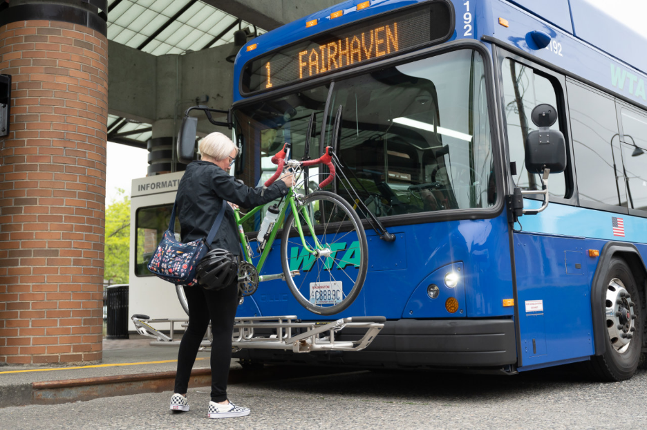

Riding the bus
How to ride the bus
Riding the bus in Whatcom County is easy. The first step to riding is finding the stop that’s closest to you. You can find it by calling Whatcom Transportation Authority (WTA), (360) 676-7433 or by using the on-line trip planner. Once you find your closest stop, you can get to your destination or travel to the Downtown or Cordata Station to connect to another bus line. You can even connect to a route that will take you to Mt. Vernon in Skagit County.
Check our Events Page for Guided Bus Rides. They’re a great way to learn with support of Smart Trip staff.
Want to give it a try?
- WTA Fare Information
- WTA Bus Schedules and Trip Planning
- Maps
- Bikes on the Bus
- Tips for First Time Riders
WTA Fare Information
General fare for fixed bus routes is $1 per ride. The bus route to Skagit County is $2. There are reduced fare rates for seniors, veterans and riders with disabilities. Youth 18 and under ride free. Bus passes including a refillable pass are available. Operators and fare boxes do not make change. You need exact fare per ride. Find more information about WTA bus fares here.
WTA Bus Schedules and Trip Planning
Once you’re on a WTA bus, you can connect to any other bus and go all over town or out in the county. Bus schedules can be found in printed transit guides and on WTA’s website. Each bus stop also includes a stop specific schedule. WTA’s website includes an easy-to-use trip planner. You can enter your location and destination. The planner will give you the place and time to catch the bus.
WTA Route Schedules WTA Trip PlannerMaps
We have maps for making Smart Trips. These Bellingham and Whatcom County maps are designed to show you how to reach many of your nearby destinations by walking, bicycling or riding the bus. WTA bus stops and routes are highlighted as well as trails and bicycle routes. The Bellingham map has symbols for grocery stores, pharmacies, mailboxes, and many other destinations. The county map shows hills and areas of caution for bicyclists.
Bellingham Map County Map
Bikes on the Bus
Sometimes you don’t live close to a bus stop or your destination is a bit far from a bus stop. Consider pairing your bike with the bus. Each WTA bus has a rack that can accommodate up to three bicycles. Stop by WTA’s Downtown or Cordata Station to practice using the bike rack on a parked bus. This video demonstrates how to load your bike onto the bus.
Tips for First Time Riders
- Arrive at your bus stop a few minutes early.
- If you have a bike, place the bike on the rack before boarding the bus.
- Board the bus at the front door. Exit the bus at the rear door.
- Have your fare or pass ready as you stop on the bus.
- You’ll need exact change as drivers don’t carry cash.
- Drop coins in the small slot in the top of the box by the driver or insert your bill into the feeder. The pass reader is to your right as you board the bus.
- Pull the cord to let the driver know you need to get off at the next stop.
- If you are unsure which stop you want, the driver will be happy to help.